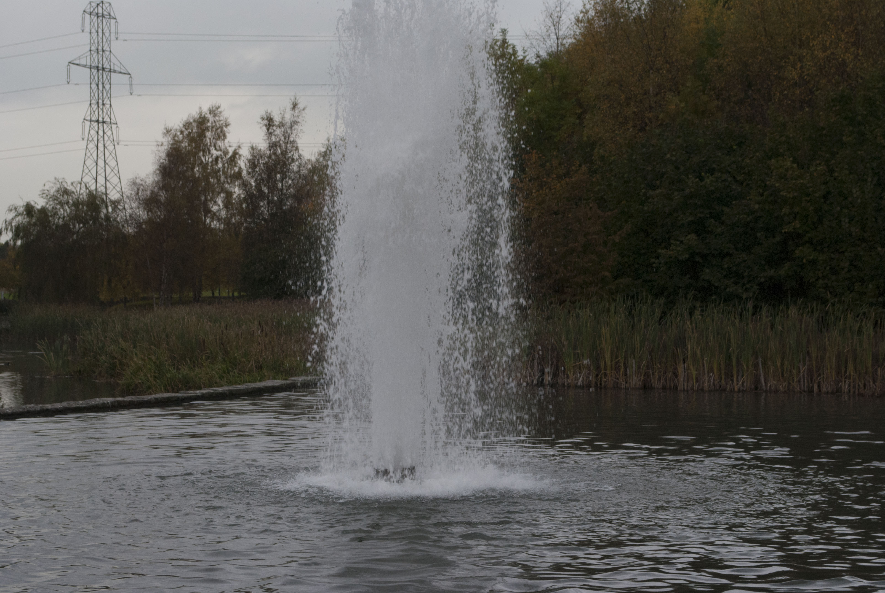
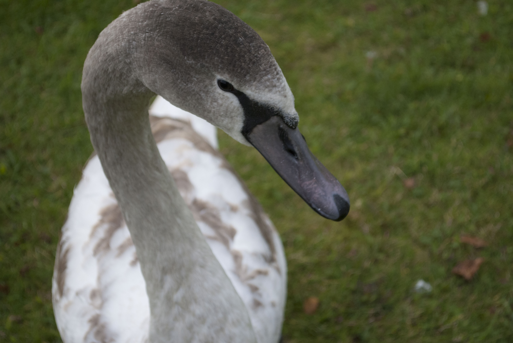

Daragh Cullen Portfolio
Home
About me
Photography
Design
Media
Photography

These photos were taken as a part of my main assignment of year 1, semester 1 photography. The goal of the assignment was to utilise different styles like focus and depth of field.
